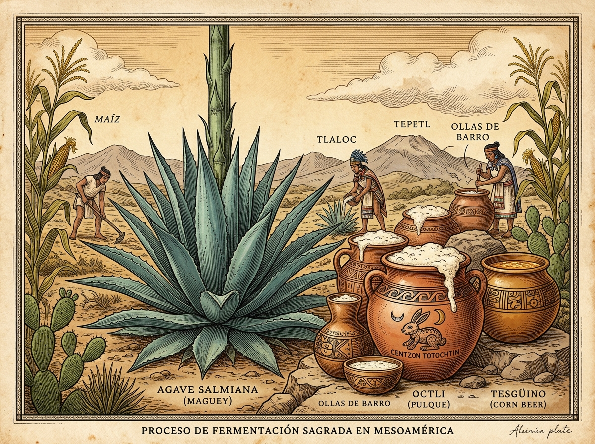
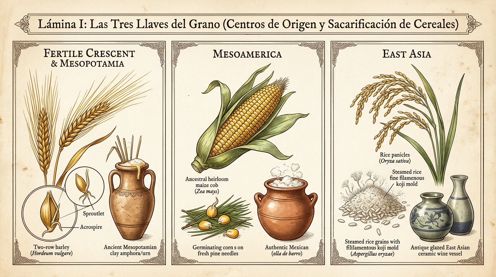
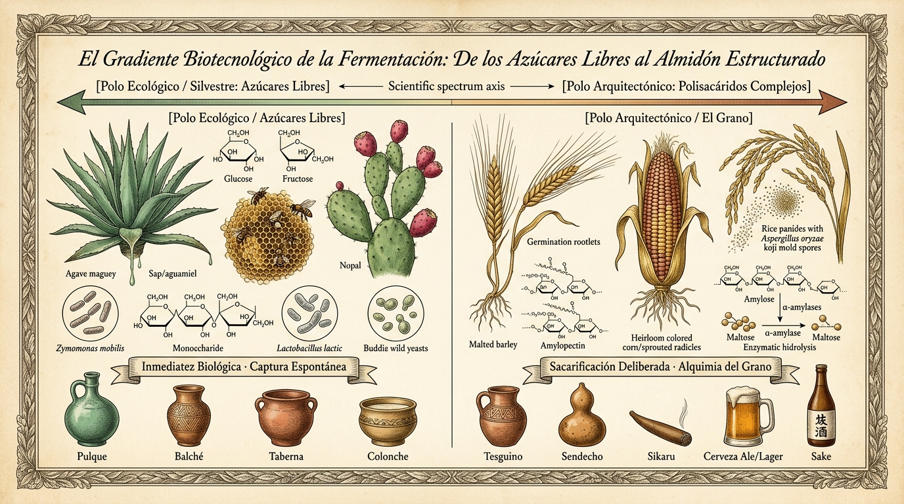
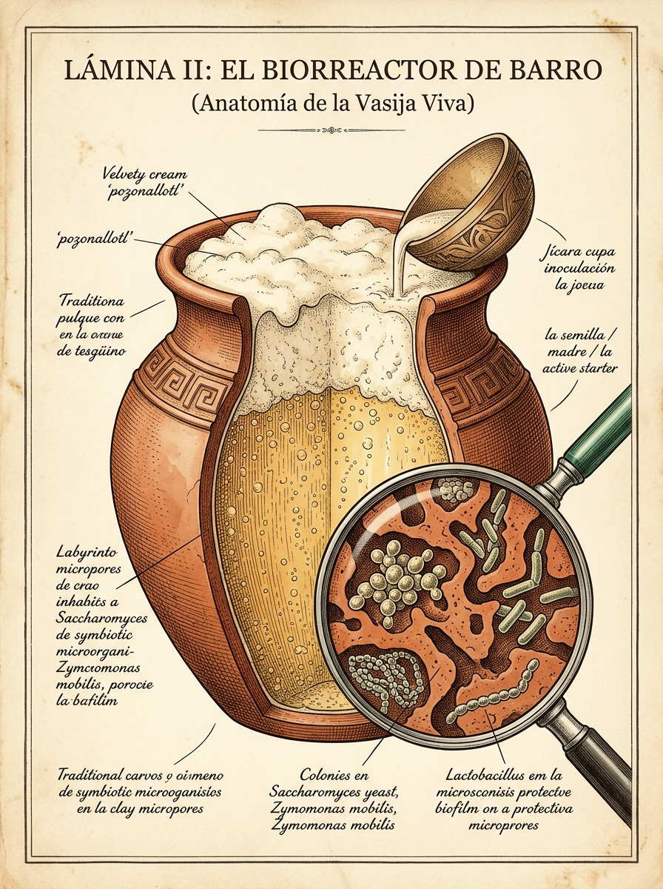
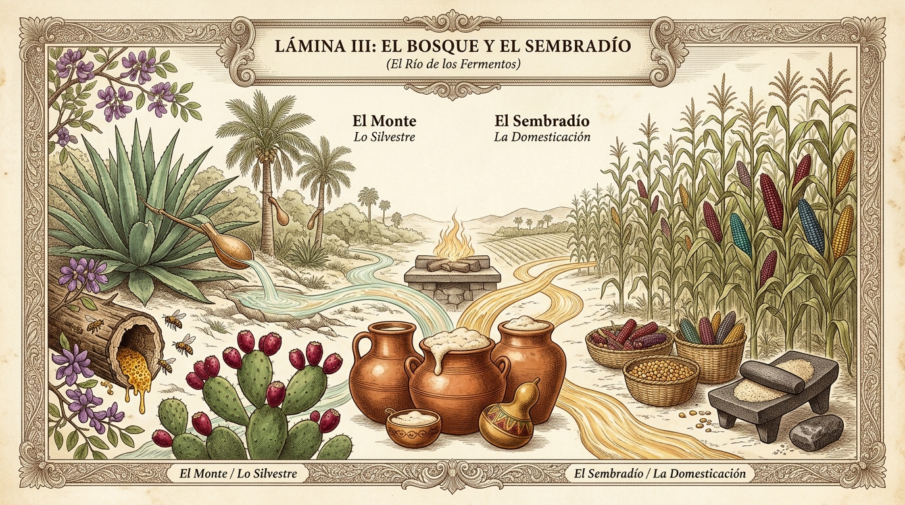

La matriz biocultural de las fermentaciones en Mesoamérica y el mundo cervecero
Cultura Chelera
October 21, 2026
Ensayo Biocultural & Microbiológico

🔬 Zymomonas mobilis & Saccharomyces
🌾 Almidón vs. Azúcares Libres
🌿 Lúpulo & Ocpatli
🐇 Los 400 Conejos (Centzon Totochtin)
En la cosmovisión mesoamericana, el fuego del fogón (tlexochtli) transforma los alimentos mediante calor exterior, mientras que la fermentación opera como un hervor frío (pozonallotl): un proceso autónomo donde la materia líquida adquiere respiración, murmura, se entibia sutilmente sin fuego y engendra espuma viviente.
El vocablo náhuatl pozonallotl (espuma efervescente) comparte raíz con pozonqui (lo que hierve o se esponja) y con bebidas rituales como el pozonque o el pozol. Para los pueblos originarios, la espuma no era un subproducto técnico desechable ni mero gas carbónico (\(CO_2\)), sino la evidencia sensible de la animación (tonalli) habitando el brebaje. Esta devoción estética y religiosa por la espuma unía al cacao ceremonial batido vigorosamente con molinillos, al aguamiel recién espumado por la fermentación y a las cervezas de maíz tierno.

Lámina I: Las Tres Llaves del Grano · Centros de origen agrícola (Vavílov) y las tres soluciones de domesticación para descerrajar el almidón: malteado de cebada (Creciente Fértil), malteado de maíz y saliva (Mesoamérica/Andes), y moho filamentoso koji sobre arroz al vapor (Asia Oriental).
Los nombres que la humanidad dio a sus fermentos no son etiquetas técnicas frías: son fósiles lingüísticos cargados de memoria sensorial, mitología y territorio.
La humanidad resolvió la producción de bebidas fermentadas a través de dos caminos marcados por la arquitectura molecular de los vegetales:

Figura: El Gradiente Biotecnológico de la Fermentación · Del acceso inmediato a mono y disacáridos en savias y frutas a la arquitectura del almidón desdoblada por amilasas o mohos.
El caso del pulque es microbiológicamente insólito a escala global. Mientras que la casi totalidad de las fermentaciones alcohólicas de la historia han estado comandadas por hongos eucariotas (Saccharomyces), el aguamiel es colonizado por una bacteria procarionte: Zymomonas mobilis (antiguamente descrita como Termobacterium mobile).
En las regiones áridas y serranas donde el maguey pulquero no prosperaba o donde el maíz regía la cosmología, los pueblos indígenas desarrollaron auténtica tecnología cervecera de malteado:

Lámina II: El Biorreactor de Barro · Corte transversal de una vasija tradicional de arcilla porosa, inoculada mediante back-slopping (jícara con semilla/madre) y detalle microscópico de los biofilms simbióticos (Saccharomyces, Zymomonas y bacterias lácticas) refugiados en los microporos minerales de la terracota.
Uno de los grandes desafíos técnicos de la cerveza histórica fue evitar que se agriara o se pudriera antes de consumirse. En Europa, la respuesta tardó milenios en consolidarse hasta la adopción del lúpulo (Humulus lupulus), difundido en el siglo XII por Hildegarda de Bingen gracias a las propiedades bacteriostáticas de sus resinas y alfa-ácidos.
En Mesoamérica se descubrió el mismo principio protector utilizando la farmacopea nativa y la ecología de la arcilla:
| Función Técnica | En la Cerveza Tradicional Europea | En el Sistema Fermentativo Mesoamericano |
|---|---|---|
| Agente bacteriostático / Conservador | Lúpulo (Humulus lupulus): inhibe bacterias que avinagran el mosto. | Raíz de Ocpatli (Acacia angustissima o Calliandra grandiflora): rica en taninos y compuestos fenólicos que seleccionan la microbiota y evitan putrefacciones. |
| Clarificación y selectividad | Flor de lúpulo e iris moss (Chondrus crispus). | Corteza de Balché (Lonchocarpus violaceus): sus flavonoides clarifican la miel fermentada y actúan como antiséptico selectivo. |
| Aporte de amargor / Balance sensorial | Alfa y beta ácidos isomerizados (isohumulona). | Alcaloides y resinas de raíces y cortezas medicinales que balanceaban el dulzor del aguamiel o del mosto de maíz. |
| Inóculo y persistencia microbiana | Varillas de levadura (Kveikstokk en Noruega), sedimentos y barricas de roble. | Ollas porosas de barro curado, zurrones de cuero de venado (tinacales) y back-slopping con “semilla” (madre o tlapehualli). |
En los tinacales de pulque, en las ollas de barro del tesgüino rarámuri y en las chicherías andinas se compartía una ley inviolable: la olla de fermentar nunca se lava con agua hirviendo ni jabón. Lavarla a fondo significaba «matarle el alma», pues destruía el biofilm de levaduras y bacterias lácticas resguardado en los poros de 5 a 50 micrómetros de la terracota, dejándola expuesta a patógenos. La vasija no era un recipiente inerte: era un organismo simbiótico heredado por generaciones.
En la cosmovisión mexica, el pulque (octli) estaba tutelado por la diosa Mayahuel (el cuerpo vegetal generoso) y por su consorte Pátecatl (el dios de las raíces y la medicina que cura y fermenta). De su unión nacieron los Centzon Totochtin (los 400 Conejos de la Embriaguez), encabezados por Ometochtli (Dos Conejo).
El número 400 en náhuatl (centzontli) no era meramente contable, sino sinónimo de incontable, infinito y multifacético. Los antiguos sabios comprendían que el alcohol no producía una sola embriaguez homogénea, sino una diversidad de desdoblamientos anímicos:
Esta taxonomía psicológica es extraordinariamente contemporánea: reconoce la interacción entre la farmacología del fermento, el entorno social (set & setting) y la personalidad individual, advirtiendo sobre el respeto reverencial que merecía toda sustancia capaz de alterar la conciencia.
ADH4 y la Dieta HumanaTanto el consumidor de cerveza en Mesopotamia y Baviera como el bebedor de pulque en Teotihuacán y el bebedor de tesgüino en la Sierra Madre Occidental están unidos por un evento paleogenético ocurrido hace unos 10 millones de años: la mutación A294V en la enzima Alcohol Deshidrogenasa 4 (ADH4).
Esta mutación multiplicó por 40 la capacidad de nuestros ancestros primates para metabolizar etanol de frutos caídos en el suelo de la selva. La fermentación humana no nació como una indulgencia superflua, sino como una tecnología vital: 1. Preservación calórica: Almacenar el exceso estacional de azúcares antes de su putrefacción. 2. Seguridad microbiológica: El alcohol y los ácidos orgánicos purifican el agua en entornos sin saneamiento. 3. Enriquecimiento vitamínico: Las levaduras y bacterias sintetizan vitaminas del complejo B (tiamina, riboflavina, niacina) y aminoácidos esenciales ausentes en el grano crudo o en la savia virgen.

Lámina III: El Bosque y el Sembradío · Paisaje biocultural integrado donde confluyen el caudal silvestre (recolección de aguamiel en maguey con acocote, savia de palma coyol, miel melipona con flor de balché y frutos de cactáceas) y el caudal agrícola (la milpa comunal, mazorcas criollas, malteado de maíz y metates) en la vasija viva y la espuma compartida.
En Mesoamérica nunca existió una frontera rígida entre la naturaleza del monte y el surco agrícola. Por el contrario, el banquete y el rito celebraban la reconciliación entre la generosidad espontánea del bosque y la labor paciente del campesino:
Ambos caudales confluían en las mismas ollas de barro, bendecidas por el copal y compartidas en el tequio y la reciprocidad (korima).
La cerveza artesanal contemporánea y las bebidas tradicionales de los pueblos originarios no son artefactos de mundos opuestos. Son capítulos complementarios de una misma historia evolutiva y cultural.
Apreciar la turbidez viva de una Hazy IPA o la fermentación mixta de una Gueuze belga debería hermanarse de forma natural con el aprecio por la viscosidad probiótica de un buen pulque de tinacal o la nobleza telúrica de un sendecho mazahua. Ambas tradiciones celebran la paciencia, el respeto por los tiempos biológicos y la eterna fascinación humana ante el misterio de la espuma.